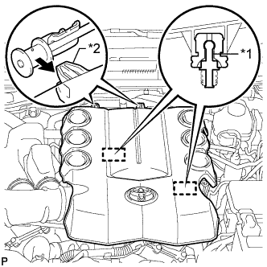
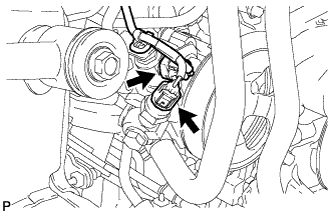

ЛОПАСТНОЙ НАСОС (для моделей с двигателем 1GR-FE) > СНЯТИЕ |
| 1. ОТСОЕДИНИТЕ ПРОВОД ОТ ОТРИЦАТЕЛЬНОГО ВЫВОДА АККУМУЛЯТОРНОЙ БАТАРЕИ |
| 2. СНИМИТЕ ПРАВОЕ ПЕРЕДНЕЕ КОЛЕСО |
| 3. СНИМИТЕ УПЛОТНЕНИЕ ФАРТУКА ПРАВОГО ПЕРЕДНЕГО КРЫЛА |
 |
Освободите 4 фиксаторов и снимите уплотнение фартука крыла.
| 4. СНИМИТЕ ДЕКОРАТИВНУЮ КРЫШКУ V-ОБРАЗНОГО ДВИГАТЕЛЯ |
|  |
Поднимите переднюю часть декоративной крышки V-образного двигателя, чтобы открепить 2 штифта. Затем снимите 2 крюка декоративной крышки V-образного двигателя с кронштейна, чтобы снять декоративную крышку V-образного двигателя.
| *1 | Штифт |
| *2 | Крюк |
| 5. СНИМИТЕ ШЛАНГ И КРЫШКУ ВОЗДУШНОГО ФИЛЬТРА |
 |
Снимите крышку и шланг воздушного фильтра.
Отсоедините разъем датчика массового расхода воздуха, вакуумный шланг, вентиляционный шланг и 4 хомута.
Ослабьте хомут.
Отсоедините 4 откидных защелки, выверните болт и снимите крышку и шланг воздушного фильтра.
| 6. СНИМИТЕ ФИЛЬТРУЮЩИЙ ЭЛЕМЕНТ ВОЗДУШНОГО ФИЛЬТРА В СБОРЕ |
| 7. СНИМИТЕ КОРПУС ВОЗДУШНОГО ФИЛЬТРА |
| 8. СНИМИТЕ ПОЛИКЛИНОВОЙ РЕМЕНЬ ВЕНТИЛЯТОРА И ГЕНЕРАТОРА |
 |
Поворачивая натяжитель ремня против часовой стрелки, расположите технологическое отверстие для натяжителя ремня в месте крепления натяжителя ремня, а затем вставьте в технологическое отверстие стержень диаметром 6 мм (0,236 дюйма), чтобы закрепить натяжитель на месте.
Снимите поликлиновой ремень.
| 9. ОТСОЕДИНИТЕ РАЗЪЕМ КОНТАКТНОГО ДАТЧИКА ДАВЛЕНИЯ ЖИДКОСТИ ДЛЯ МЕХАНИЗМА РУЛЕВОГО УПРАВЛЕНИЯ С УСИЛИТЕЛЕМ |
|  |
Отсоедините 2 разъема.
| 10. ОТСОЕДИНИТЕ ШЛАНГ № 1 СОЕДИНЕНИЯ МАСЛЯНОГО БАЧКА С НАСОСОМ |
Сдвиньте зажим и отсоедините шланг соединения масляного бачка с насосом от лопастного насоса.
| 11. ОТСОЕДИНИТЕ ТРУБКУ ПОДАЧИ ТОПЛИВА |
Выверните пустотелый болт-штуцер и отсоедините нагнетательный патрубок.
Снимите прокладку.
| 12. СНИМИТЕ ЛОПАСТНОЙ НАСОС В СБОРЕ |
Выверните болт и снимите кронштейн жгута проводов.
Выверните 2 болта и снимите лопастной насос.